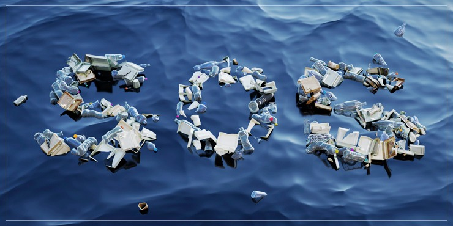
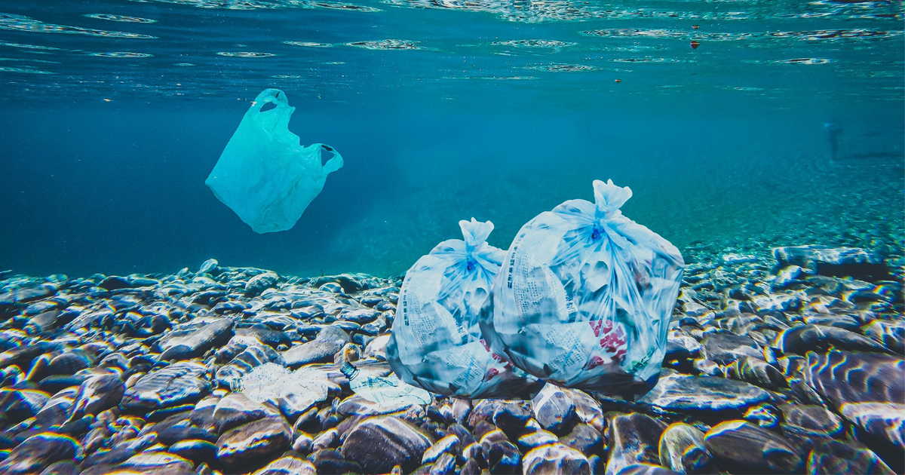
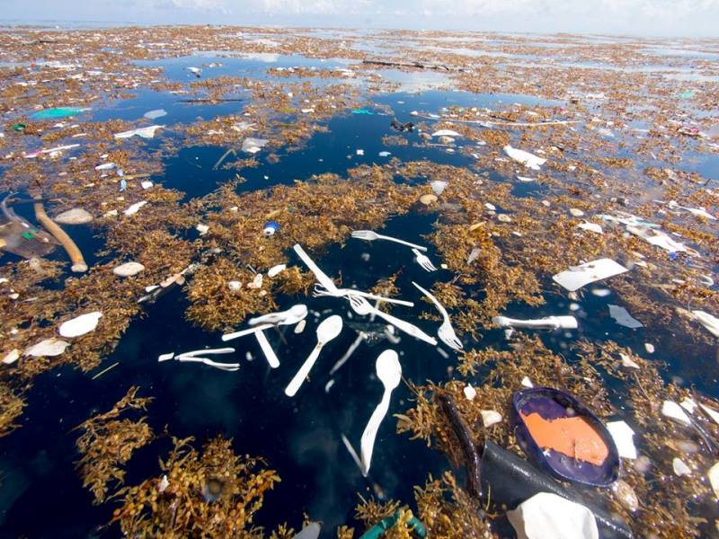
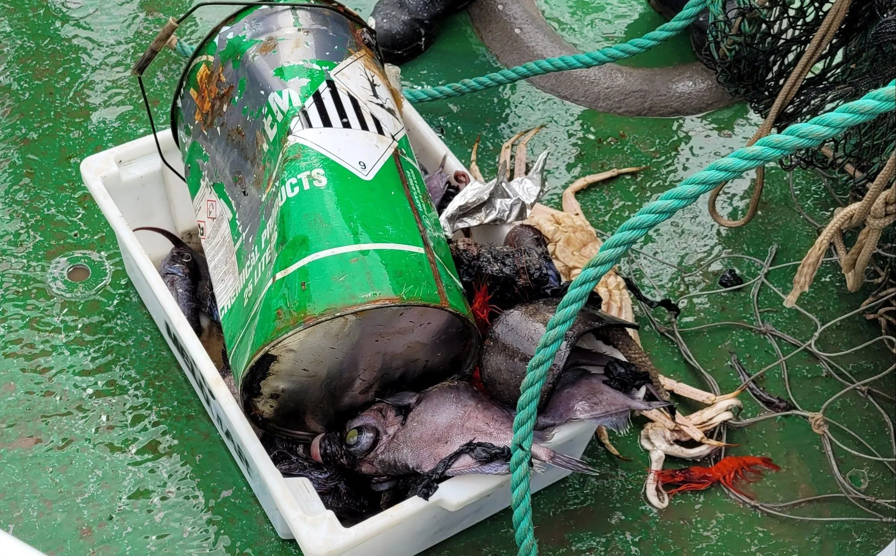
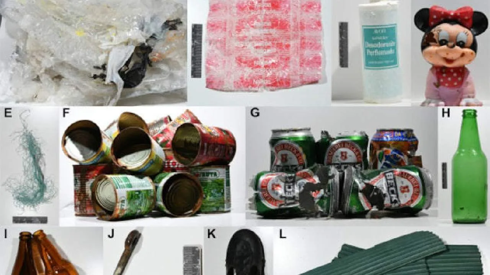
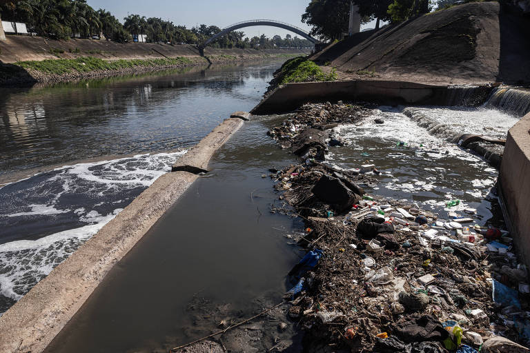
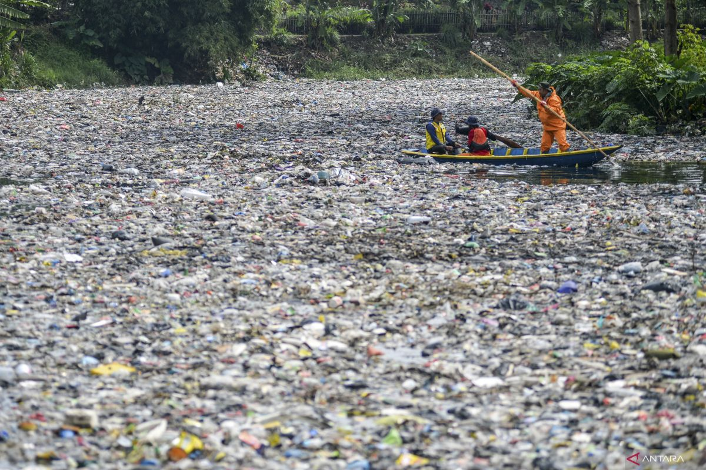
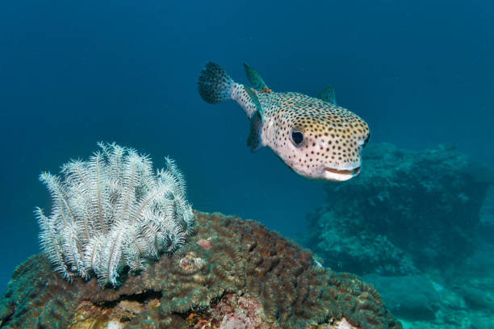
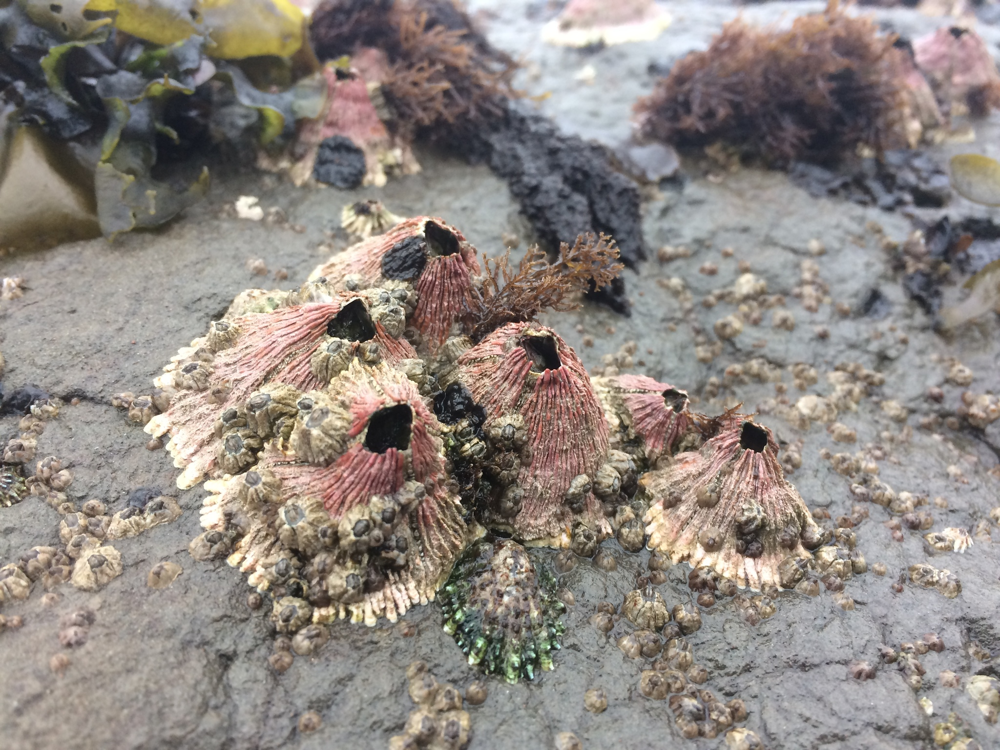

Este site foi criado para abordar o tema da poluição oceânica, apresentando o contexto histórico, causas e consequências desse problema global. Aqui você encontrará informações sobre os principais tipos de contaminantes, estudos recentes sobre seus impactos na vida marinha e na saúde humana, além de sugestões de práticas e políticas que podem reduzir o fluxo de resíduos para os oceanos. Navegue pelas seções para entender todos os contextos.
A poluição marinha é um problema antigo, mas que se intensificou com o avanço da industrialização e do crescimento populacional. Desde os tempos mais remotos, os oceanos foram vistos como uma fonte inesgotável de recursos e um local conveniente para descartar resíduos. No entanto, ao longo dos séculos, a poluição de fonte pontual, como derramamentos de petróleo e lançamento de resíduos industriais, também contribui significativamente. A poluição oceânica tem graves consequências para a vida marinha, ecossistemas e para a saúde humana.

Fonte Disponível em: Jornal USP

Fonte Disponível em: Image do Google
Grande parte do lixo encontrado nos oceanos, aproximadamente 80%, tem origem em atividades humanas realizadas em terra, sendo transportado até os mares pelos cursos d’água. Esse lixo marinho é composto por materiais sólidos fabricados ou transformados, como plásticos, bitucas de cigarro, metais, vidros e madeira, que são descartados de forma irregular. Os plásticos, em especial, representam a maior parte desses resíduos e são extremamente preocupantes, pois não se decompõem facilmente e podem permanecer no ambiente por séculos. Esses materiais afetam gravemente a vida marinha, já que muitos animais os confundem com alimento e acabam ingerindo-os, o que leva à morte de diversas espécies e à contaminação das cadeias alimentares. Além de prejudicar o equilíbrio dos ecossistemas aquáticos, esse acúmulo de lixo também compromete atividades humanas ligadas ao uso das águas, como a pesca, o turismo e o transporte fluvial.
Considerados uma opção saudável de alimentação, os peixes podem, no entanto, carregar resíduos e substâncias nocivas, mesmo quando capturados em regiões oceânicas muito distantes das costas. Isso revela que a poluição marinha não está restrita às áreas litorâneas, mas está se espalhando por todos os recantos dos oceanos.
Um estudo recente, conduzido pelo Instituto Oceanográfico (IO) da USP, registrou a presença de lixo no fundo marinho brasileiro, a profundidades de até 1.500 metros e a 200 km da costa dos estados de São Paulo e Santa Catarina. Durante a pesquisa do projeto Deep-Ocean, pesquisadores recolheram uma grande quantidade de lixo, incluindo garrafas, latas, plásticos e materiais de pesca, além de itens mais prejudiciais, como tintas de embarcações e latas de óleo para motores. A quantidade e variedade de resíduos encontrados foram surpreendentes, considerando a profundidade e a distância das áreas costeiras.
Inicialmente, o projeto tinha como objetivo investigar a fauna de peixes nas regiões mais profundas do oceano, mas a equipe de cientistas foi confrontada com a presença massiva de resíduos acumulados. O plástico foi o material mais predominante, seguido por metais, têxteis e vidro. Esses materiais não só afetam a vida marinha, como também têm o potencial de impactar a saúde humana, uma vez que os contaminantes podem ser transferidos para as cadeias alimentares e chegar aos consumidores.

Fonte Disponível em: CNN Brasil

Fonte Disponível em: Funverde
A pesquisa abrangeu 31 pontos ao longo do litoral de São Paulo e Santa Catarina, sendo que em apenas três locais não foram encontrados resíduos. Isso demonstra que a poluição marinha está afetando todos os níveis da coluna d'água, inclusive os mais distantes e menos acessíveis. A maior parte do lixo encontrado é composta por plástico, mas metais e outros materiais também estão presentes, o que levanta preocupações sobre os danos a longo prazo a ecossistemas delicados.
Esse estudo destaca a necessidade urgente de políticas públicas mais rigorosas para combater a poluição dos oceanos, além da implementação de soluções que envolvam a indústria e a sociedade no gerenciamento adequado de resíduos. Sem ações mais eficazes, a poluição continuará a afetar a biodiversidade marinha e, consequentemente, a saúde do planeta.
Os grandes rios do planeta, outrora símbolos de vida e fertilidade, transformaram-se em espelhos da crise ambiental global. O Yangtzé, artéria vital da China, carrega hoje uma carga pesada de metais como cádmio e chumbo, provenientes do parque industrial que margeia seu curso. Amostras coletadas em Xangai revelam concentrações de mercúrio 40 vezes superiores aos limites da OMS, enquanto ilhas de plástico flutuante obstruem seu delta.
Na Índia, as águas sagradas do Ganges escondem um legado tóxico de desenvolvimento desordenado. O Instituto Central de Pesquisa em Saúde Pública registrou níveis de coliformes fecais que tornam o rio mortal em Varanasi - cada mililitro de água contém mais de um milhão de bactérias patogênicas. As indústrias de curtume em Kanpur despejam diariamente 50 toneladas de cromo hexavalente, substância cancerígena que tinge o rio de vermelho em alguns trechos.
O Nilo, berço da civilização faraônica, enfrenta uma silenciosa revolução química. Agricultores egípcios relatam colheitas minguantes devido à irrigação com água contaminada por pesticidas organoclorados. No delta, peixes apresentam tumores externos, enquanto hepatite E se espalha entre comunidades ribeirinhas que dependem do rio para consumo direto.
Na América do Sul, o Amazonas sofre com o mercúrio da mineração ilegal - um estudo da Fiocruz encontrou níveis 10 vezes acima do seguro em indígenas Munduruku. O rio, que abriga 20% da água doce do planeta, vê sua biodiversidade ameaçada por garimpos que despejam 100 toneladas do metal anualmente. Correntes outrora cristalinas na floresta agora brilham com um tom suspeito de ouro líquido.

Fonte Disponível em: Folha Uol

Fonte Disponível em: Megapolitan
O Rio Tietê, um dos mais importantes do estado de São Paulo, sofre com décadas de poluição devido ao despejo de esgoto doméstico, resíduos industriais e lixo, resultando em trechos altamente contaminados e com espuma tóxica. Apesar de ser um rio de caudal significativo, suas águas poluídas eventualmente chegam ao Rio Paraná e, posteriormente, ao Oceano Atlântico, contribuindo para a degradação ambiental marinha com contaminantes químicos e orgânicos que afetam a biodiversidade e a qualidade da água costeira.
A Europa não escapa deste cenário. O Reno, símbolo da recuperação ambiental nos anos 90, enfrenta novos desafios com microplásticos e resíduos farmacêuticos. Peixes apresentam disfunções hormonais devido a anticoncepcionais não filtrados, enquanto sedimentos acumulam PCBs - substâncias banidas há décadas, mas persistentes no ecossistema.
Os efeitos se propagam além dos leitos. Quando o Ganges deságua na Baía de Bengala, cria uma zona morta de 60.000 km² onde nada sobrevive. O Yangtzé exporta sua poluição para o Mar da China Oriental, sufocando recifes de coral. O Mississippi carrega nitratos do cinturão agrícola americano até o Golfo do México, onde criou a maior zona hipóxica do mundo.
Este é o legado do Antropoceno: cursos d'água que carregam não apenas sedimentos, mas o peso das escolhas humanas. De veículos da vida, transformaram-se em testemunhas silenciosas de um equilíbrio rompido, suas correntes agora marcadas por substâncias que a natureza nunca soube processar.
O crescimento do lixo no oceano tem sido uma preocupação crescente nos últimos anos. Dados indicam que o volume de plástico no mar pode triplicar até 2040, atingindo entre 23 e 37 milhões de toneladas por ano, se não houver uma ação drástica de redução. Essa quantidade significa que, em 2040, pode haver mais plástico do que peixes no oceano.
Segundo pesquisas que duraram em média 8 anos, cientistas chegaram a resultados aonde apontam que criaturas marinhas em estágio de desenvolvimento devem ser as mais prejudicadas pela emissão de gás carbono, quem vêm elevando a acidez dos oceanos no mundo.
Entre os animais mais afetados são os peixes como o bacalhau, cujas taxas de sobrevivência na fase juvenil podem cair drasticamente em cenários de alta acidificação. Experimentos indicam que, em condições extremas, apenas uma pequena parcela dos filhotes atinge a maturidade. Moluscos, como mexilhões e ouriços-do-mar, também sofrem com a redução do pH, que dificulta a formação de suas conchas e estruturas calcárias.
Por outro lado, alguns organismos apresentam maior resiliência. Crustáceos como os cirrípedes (percebes) mostram pouca sensibilidade às mudanças, enquanto certas algas podem até se beneficiar do excesso de CO₂, utilizando-o para fotossíntese. Contudo, essas exceções não compensam os danos à maioria das espécies, especialmente corais, essenciais para a manutenção de recifes.

Fonte Disponível em: istockphoto

Fonte Disponível em: Bio diversity4all
O aumento da acidez está diretamente ligado à queima de combustíveis fósseis, que libera grandes quantidades de CO₂ na atmosfera. Quando dissolvido na água, esse gás forma ácido carbônico, reduzindo o pH oceânico. Desde a Revolução Industrial, o pH médio da superfície marinha caiu de 8,2 para 8,1, representando um aumento de aproximadamente 26% na acidez. Além das emissões, outros fatores agravam o problema:
Cientistas investigam se espécies marinhas podem se adaptar evolutivamente a essas mudanças. Projetos como o Bioacid, liderado por instituições alemãs, analisaram organismos em diferentes fases de vida, desde micróbios até peixes, em regiões como o Mar do Norte e o Ártico. Os resultados sugerem que, embora alguns indivíduos desenvolvam tolerância, a velocidade das alterações químicas supera a capacidade de adaptação natural.
O plástico está cobrindo e destruindo nosso planeta
Como o Microplástico vem afetando os oceanos